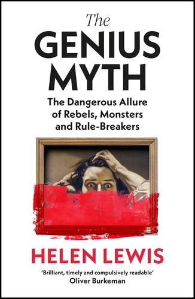
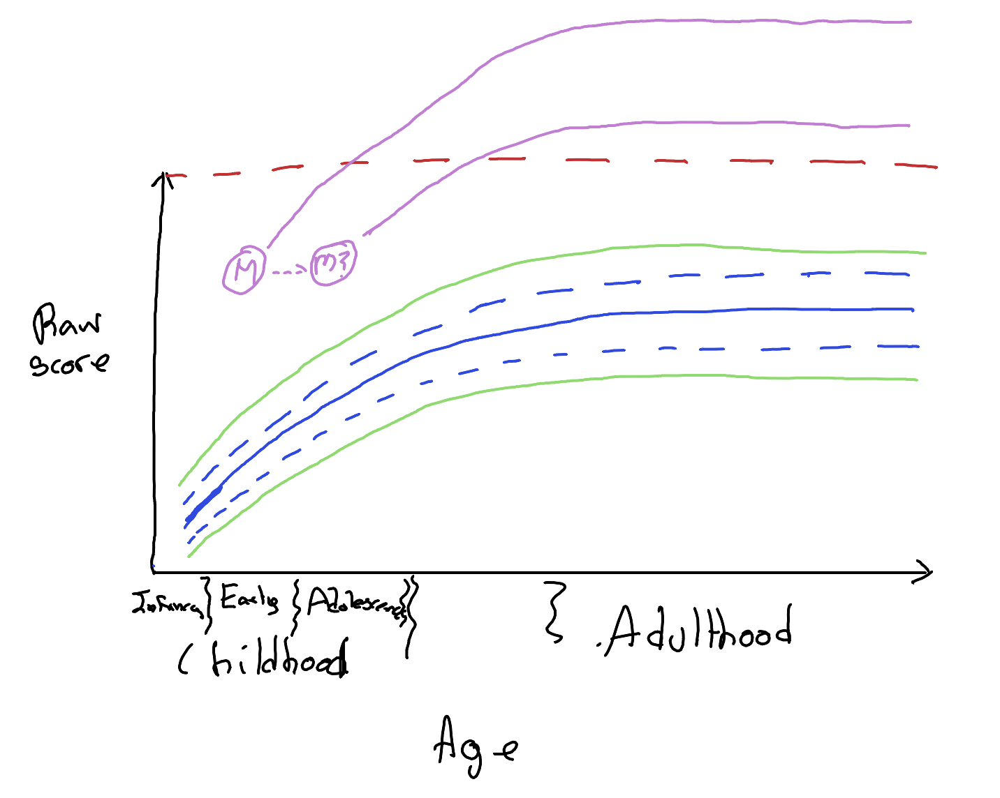
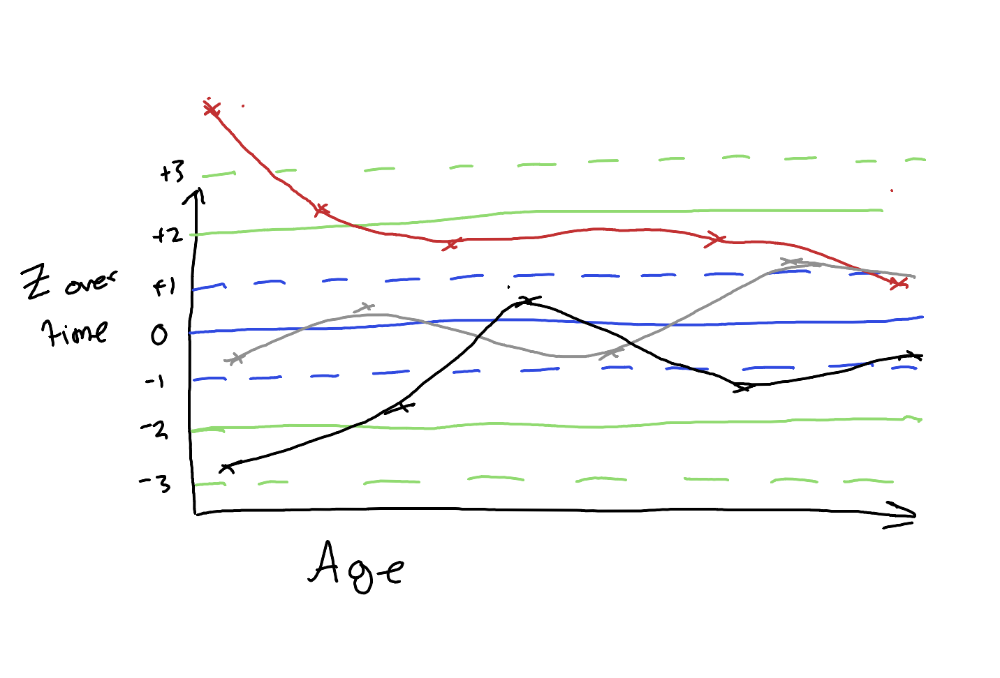
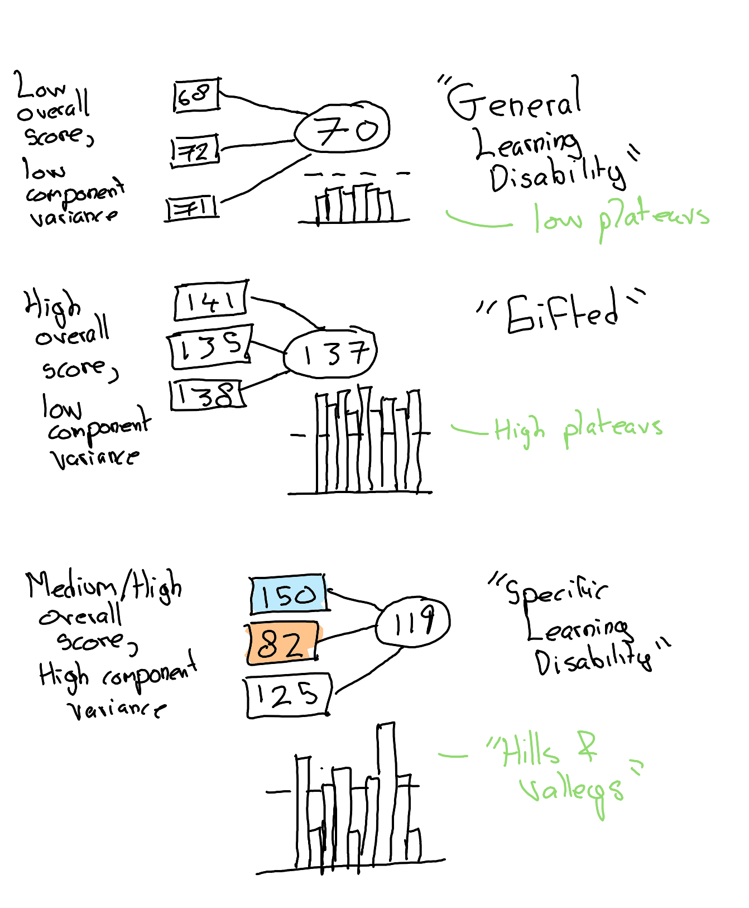
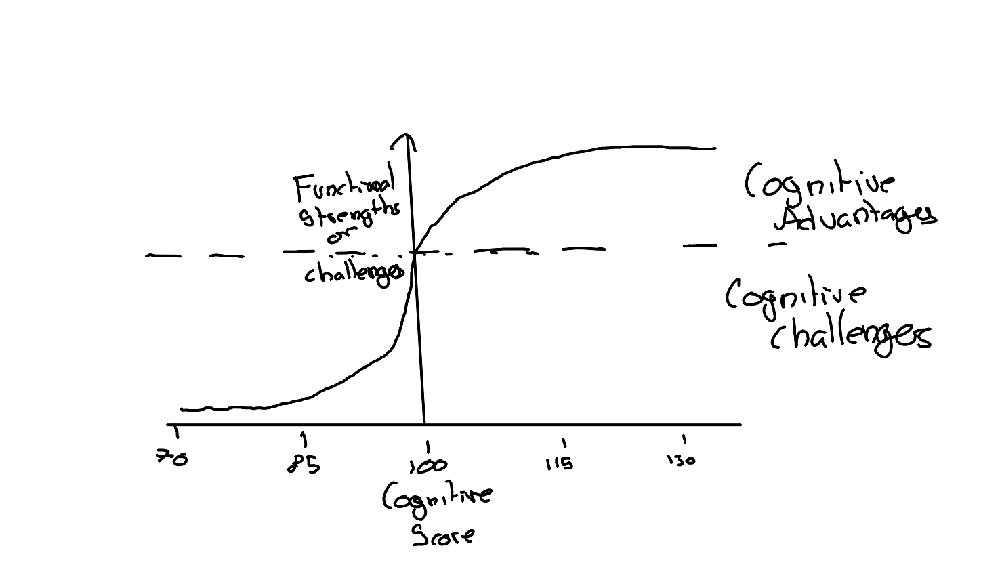

Revisionism and Reactionism
There was a phase, a few years ago, when revisionist social science non-fiction by British science authors (often affiliated with the BBC) was in vogue. By revisionist I mean something like works intending to challenge problematic assumptions commonly made in certain social scientific and affiliated disciplines, assumptions considered potentially dangerous and socially regressive in their implications and popular interpretations. Often such assumptions related to sex and gender, sometimes to race, sometimes to sexuality, or more occasionally to cultural superiority.
Some examples: Inferior (about gender differences) and Superior (about race differences) by Angela Saini; a tranche of books about testosterone and sex differences by Cordelia Fine; certain books by Adam Rutherford; Invisible Women by Caroline Criado Perez: mostly books I’ve read (or tried to).
The problem with such books: revisionism is to the political left as reactionism is to the political right. The impulse is the same: to be contrary, sometimes just for the sake of it. The strength of such books is they can help to help us see the waters in which specific disciplines swim; the limitations are then either that they may argue for the fields to be dredged; or that they are in practice simply incurious about the the disciplines they seek to critique, seeing them just as another field to fight the progressive fight.
Sometimes the urge towards resistance and contrarianism - whether to fight the progressive fight as in revisionism, or fight the conservative fight as in reactionism - can lead to strange bedfellows and outright contradiction. A key example of this: on Monday 20 May 2019 Radio 4’s Start the Week featured Angela Saini, and Caroline Criado Perez. Saini’s previous book, Inferior, essentially argued that many sciences overstate sex differences, leading to sexism and other forms of harm against women. Perez’s book, Invisible Women, by contrast argues that many sciences understate sex differences, and assume that research conducted in men also generalises simply to women, also constituting a form of sexism and harm against women. So, identifying and highlighting sex differences is sexist; and not identifying and not highlighting sex differences is also sexist.1
The Genius Myth Conceit
All of which is intended to be a preamble to my notes on Helen Lewis’ book The Genius Myth. Many years ago Lewis could easily be grouped with the likes of Saini, Fine, and Perez, as someone perhaps more motivated to argue against a perceived (and perceived-to-be-harmful) scientific orthodoxy, than to present a coherent scientific synthesis on particular topics and fields, the kind of synthesis - the capacity to abstract, generalise, explain and understand, efficiently and effectively - that, for me, allows popular science to, at its best, induce a near psychedelic sense of awe in the reader.2 Fortunately, Lewis’ The Genius Myth has two things going for it that make it a much more interesting book than some of the above: 1) Lewis has to an extent been ‘mugged by reality’ when it comes to failing certain ideological purity tests (mostly due to holding views considered by some to be ‘gender critical’, and by others just as ‘common sense’); 2) Lewis is genuinely curious and an effective, engaging writer.
The conceit of The Genius Myth is definitely revisionist. It’s something like:
the idea of labelling some people as ‘geniuses’ is right-wing, because it focuses on the myth of inherent superiority, and downplays the sociological and environmental factors that enabled such individuals to flourish. It also gives such individuals too much of a ‘free pass’ in tolerating, even condoning, bad behaviour that would not be acceptable in non-geniuses. So it promotes something like a two-tier ethics: one rule for them, another for everyone else.
However, both the advantage and limitation of The Genius Myth is in its chatty wooliness, its (and Lewis’) convivial curiosity. Despite being anchored around the conceit of deconstructing a dangerous dogma, The Genius Myth takes a scenic route through to its (uncertain) destination, stopping frequently to smell the roses (and all too often the malodorous manure in which it’s grown).
Now to the subtitle of my review: term undefined. Lewis adopts, at best, a pornography censor’s approach to defining genius: you know it when you see it. Or at least she seems to for the first part of the book, which focuses on criticising various efforts to identify geniuses, support geniuses, and (as part of the right-edge of the eugenics movement) to help breed more geniuses.
Searching for Genius: A Right-wing enterprise?
Starting with the claim that “Genius is a right-wing concept, because it champions the individual over the collective”, part one focuses on endeavours by the likes of Francis Galton and Lewis Terman to, respectively, profile proven geniuses and identify potential geniuses. The former endeavour suffered from a kind of survivorship bias: of course in iniquitous times only those whose hereditary bequests are financial as well as cognitive, people independently wealthy have well connected, have the kind of environment in which such talents are liable to flourish, and for their potential to be fulfilled.
So, over the early 20th century attempts to measure cognitive ability in everyone, not just laud its presence in the landed gentry, gained momentum, and the science and concept of IQ was born. Lewis Terman attempted to use this nascent discipline to identify, at a young age, those children most likely to become exceptionally smart adults, and support them in actualising their potential. How smart? ‘Genius level’, of course. Casting the net of cognitive testing wide, Terman’s cognitive child elites were dubbed his ‘Termites’.
Lewis argues that such efforts - to pick ‘winners’ early using cognitive testing - were largely unsuccessful. How? By pointing out a number of occasions where individuals, who were judged ‘smart but not smart enough’ and rejected (miscategorised?) by Terman in his attempts to find budding geniuses, then turned out to be extremely capable scientists and engineers, clearly ‘geniuses’ (again using the porn censor’s definition) in retrospect. The median achievements of the Termites, however, were much more modest.
Later, and entertainingly, Lewis discusses the highly dysfunctional and fractious nature of high IQ societies, more bastions for obsessive weirdos and conspiracy theorists with limited practical skills and big chips on their shoulders, than for high functioning geniuses.
Many of the examples in this part were interesting to me, and many of the arguments broadly convincing. Part of me wishes Lewis had delved a little more into the technical minutae of the concept of ‘g’ in cognitive testing, and of its measurement in children, as such issues could explain much of what she discusses in this part. (A more realistic part of me is glad she didn’t, as I don’t think these aspects would be her forte…)
IQ and g
Regarding IQ and g. We have, fundamentally, a proposition: how good someone is at answering one question testing general reasoning ability should be broadly predictive of how they answer others. The tendency to answer each question correctly is partly determined by something underlying and inherent, a single ‘latent factor’, commonly called g; conversely, the average tendency (maybe weighted by difficulty) to answer a batch of questions correctly should be a reasonable way of assessing what this g is for an individual. IQ scores are therefore broadly numeric descriptions of what an individual’s estimated g value, as normed against the general population: 100 for the average score, 115 (usually) for about one standard deviation above the average (higher than about two thirds of the population), 130 for two standard deviations above (higher than about 19 people out of 20), and so on. (See here for the statistical heuristics; and this earlier statistical post for more on the theory of psychometric testing.)
However, though psychometric models can be run which jump straight to this ‘one underlying factor model’ (the ‘big g’), this doesn’t seem to be how most modern IQ test batteries are designed. Rather, it’s recognised that there are a number of distinct subdimensions - sub-batteries of test items that are more internally coherent to each other than to other items - that the battery of items group into. One subdivision is between ‘crystallised’ and ‘fluid’ intelligence; another subdivision may be between ‘verbal’ and ‘numeric’ intelligence. Such subdivisions just tend to drop out of patterns of correlation between collections of items. The sub-factors tend to be positively correlated; but items testing (say) crystallised intelligence tend to be more correlated with each other than (say) items testing fluid intelligence.
IQ vs Achieved Genius
What implications do these subfactors have on what we might call ‘achieved genius’? Well, an IQ test is something of a grab-bag of evaluations, and to the extent it’s at all predictive of job performance, what it tends to return is an average of expected performant abilities across a variety of jobs and roles. It’s a generic score for a generic job requiring some level of cognitive ability.
But no one has a generic job, i.e. a job whose performance depends equally3 on all those subfactors tested somewhere within most IQ tests. IQ tests are, at best, attempts at predicting the ability of someone in a fictitious job that doesn’t exist. (Though a fictitious job also potentially closer to most jobs than any specific job selected at random.)
No. All too often realised genius (if we are to use that term) is a function of how well one’s specific cognitive profile matches with the demands of the role someone is actually expected to perform. Someone might have great ability with spatial reasoning, say, but if the demands of their role are largely about verbal acuity, then that high potential ability in their strongest subdomain won’t translate into real world achievements. Almost invariably, if an individual can find a role that works to their strengths, their actual performance will tend to be greater than that predicted by a generic g score implicitly based around the requirements of a generic job.
We’ll delve more into this in the critique of part two. But first let’s address the issue of how IQ tests are performed in children, as this relates to another piece of technical context for part one.
IQ Norms in Infancy and Childhood
Think of an infant growth chart used by pediatricians. The weight and height (initially length) of the infant is recorded at different times since birth. What’s the infant’s size and weight at birth, at 6 months, and two years, and so on? Such information, tracking an individual size and weight over time, can be plotted with age on the horizontal axis, and height/weight on the vertical. Typically, for hundreds or thousands of such infants, the height/weight trajectories of infants on their path to childhood have a tendency to increase quickly to start with, then perhaps to level off. There are also some types of trajectory, and age-based values of height/weight, that are more common, and others that are more uncommon.
From the assessment of a large population of infants over time, growth charts are developed, and child’s weight and height at a particular age since birth can be categorised both relative to their younger and older selves (a polyline through time), and also relative to a population of infants measured at exactly the same age. From this, the infant’s dimension can be expressed as being on a percentile given their age. And from this the pediatrician might, if they were feeling especially brave or incautious, wish to produce a predicted (or projected) height and weight of that infant if and when they reach adulthood. At its simplist, this would involve stating something like: this infant was measured as on the 20th percentile of length at six weeks of age. If they were to remain at this same percentile throughout childhood then they would grow to 5’11” in height in adulthood.
So, why would this kind of extrapolation be incautious? Because we know there can be a great deal of variation between how a specific infant grows over time, and the statistical average. For example: one infant could start off on the 90th percentile at 6 weeks, then fall off to the 60th by six months; another could remain at the 30th percentile from birth to 12 years of age, then jump to the 70th percentile between their 13th and 14th birthday. In either case, relying on a single measure to extrapolate to adult height and weight seems pretty foolish.
But when it comes to identifying ‘geniuses’ in childhood, it does seem that something like this single-measure extrapolation issue is at play. Like size, performance in cognitive tests tends to vary with age across childhood. So like weight and length/height in infant growth charts, a given score could (say) place someone at the 20th percentile if measured at five years of age, but at the 55th percentile if measured at the six and a half years of age.
Which brings us to the (I think) largely justified questioning in the Genius Myth of whether the individual reported as having the highest recorded IQ, Marilyn vos Savant, really did so (and whether this high recorded score really means what we might intuitively assume it to mean). To quote the opening paragraph of the chapter:
Who has the highest IQ in history? One answer would be: a little girl from Missouri. In 1956, she took a version of the Stanford-Binet test and recorded a mental age of twenty-two years and ten months, equivalent to an IQ of 228. (The score needed to get into Mensa is 140, and the average IQ in the general population is 100.) Her score lay unnoticed for decades, until it was uncovered and sent in to the Guinness Book of World Records, which declared her to be the smartest person who ever lived. A genius, in other words. Her name, appropriately enough, was Marilyn vos Savant.
Fermi and the Million Planets
A critical question about this little girl: how little? How young was Marilyn when this test was taken? As Lewis discusses, there’s some uncertainty in this answer, and this uncertainty could be crucial. Let’s walk through why, with a little Fermi estimation and my sketch below:
- Assuming a standard deviation of 164 points, an IQ of 228 is 8 standard deviations above the average.
- Now, with a Normal distribution, \(P(Z \ge 8) \approx 10^{-15}\).
- World population back in 1956, \(\approx 10^{9}\)
Put simply: the world population was orders of magnitude too small back in 1956 for it to have been likely to have found someone whose ‘true’ cognitive ability was 8 standard deviations above the mean. How many orders of magnitude? Well, 15 - 9 is 6, so we would likely require about a million Planet Earths, with 1950s/1960s population sizes, to find someone as apparently able as vos Savant. 5
Given this, artefactual explanations seem far more likely. Let’s look at the sketch:

In this sketch I’ve drawn out some cognitive growth curves showing how raw scores might get translated into age-normalised scores. The average score for a particular age is shown as a solid blue line, one standard deviation above and below as blue dashed lines, and 2 standard deviations as green dashed lines. We could imagine further isobars(?) like these, indicating, three, four, five, up to 8 standard deviations below and above the age-normed population average.
Something else I’ve drawn is a horizontal red line: this is the maximum raw score achievable given the test battery. If the test has 40 items, and someone gets every question correct, then the test is technically censored in its estimate of the person’s ability to complete such tests. Note a couple more things: firstly, how the same raw test score (a perfect score) maps onto different percentiles depending on the test-taker’s age. Secondly (and this is just the converse of the first point), how the very highest apparent percentile scores can only be achieved in earlier childhood. So, at age 5, the top raw score might place someone 8 standard deviations above the mean; at age 6, the same score might place them ‘only’ 6.4 SDs above the mean; and at 7, ‘only’ 5.7 SDs above, and so on. All the way up to adulthood, where the top score will ‘only’ indicate that someone’s 3.2 SDs above the population average.
Now imagine there’s also uncertainty about the test-taker’s age, especially in earlier childhood, where the gradient of percentiles is steepest. Let’s say Marilyn’s recorded age was as indicated with the letter M: very very very impressive for her age (and most ages). But if her actual age were a few weeks or months later, indicated by the symbol M?, this equal raw score would be ‘merely’ very very impressive for her age. This loss of a ‘very’ could conceivably be a couple of standard deviations, even more, if the error in age is especially egregious (and/or the accuracy with which the percentiles are estimated at younger ages is especially lower).
A quiet return from Galton…
Something else is also likely at play too, one of the oldest phenomena observed in statistical inference. See the figure below as an illustration. Here I’ve drawn just the Z scores (tramlines for percentiles) against age. I’ve sketched out three individuals who were tested multiple times, each at slightly different ages. Red has a first score that starts off high, then falls down towards the average; grey stays around the middle throughout, though oscillates quite a lot. Black starts off with an especially low score, but over time it rises up towards the average.

What is this an example of? Regression towards the mean, originally referred to as regression towards mediocrity by none other than.. Francis Galton. Put simply: when something or someone is being tested repeatedly, more generically but abstractly whenever a population is being sampled from repeatedly, exceptional scores are likely to be followed by less exceptional scores, regardless of the direction of exceptionalness. Here red’s first score was exceptionally high, and black’s score exceptionally low, but both subjects tended towards less exceptional scores after more measures.
Now, as far as I can tell the “World’s Smartest Person” moniker for vos Savant was based on a single childhood test. Given it implies an IQ eight standard deviations above the mean, and we would likely require about a million planets to find someone this exceptional if artefacts aren’t at play, we can hopefully assume something like the following:
- vos Savant was and remained better at completing these kinds of tests than most people at all ages
- vos Savant was likely precocious in her cognitive development, literally much ahead of the growth curve for critical parts of childhood.
- vos Savant’s age may well have been misestimated when ‘The Test’ was completed.
- vos Savant likely had a good day on the day she was asked to complete the test.
Back to IQ and Job Performance
Let’s now start to close another open loop from earlier: the idea that if IQ is positively predictive of job performance, it’s only in quite a generic sense, for quite a generic job. If ‘genius’ is about achievement in a specific career pathway (and the career is in something other than completing IQ tests), then why might we not expect the persons with the highest measured IQ scores to be most most likely to be ‘geniuses’ in any particular fields?
To think more about that question, let’s think a bit about role-playing games, and in particular standard practices for generating characters in such games.
Cognitive Traits and RPGs
Typically, an RPG that allows character design will have the following:
- A series of K (say ten) attributes, each with minimum and maximum possible scores.
- A total ‘pool’ of M (say 150) attribute or skill points, which can be spent/allocated to each of the 10 attributes.
One option a player could take would be to create a ‘balanced’ character. With 10 attributes and 150 points, for example, this would mean assigning 15 equally to each of the 10 attributes. This would be a Jack-of-all-Trades type character, with no obvious weaknesses, but no particular strengths either.
For many RPGs, however, a balanced character tends neither to be the most interesting nor strategically advantageous way to play. Instead, most such games involve forming a team (either composed of other real-life players, as in an online game, or computer-generated characters, as with a single person game). The challenge in forming a team then becomes recruit and maintain working relationships with other persons whose attributes complement one’s own. Within a team, the weaknesses or shortfalls in one character’s attributes are balanced out by another character’s strengths in these same attributes. (For example, someone with high strength but low wisdom being balanced out by another character with high wisdom but low strength: The brains, and the brawn.)
Teamwork in Theory
The effectiveness of the team at meeting the challenges it encounters, i.e. the effectiveness of the team, therefore depends on the following:
- The strategic decisions made by the team to direct itself to challenges that it is at least adequately prepared for;
- The maximum potential ability that exists within the team to solve the specific challenges of the particular encounters it faces;
- The tactical capacity of the team to turn to and support the specific team member best suited to the current challenge quickly and efficiently.
Although many or most RPGs are set in fantasy worlds, the factors at play in ensuring a team works effectively are far from fantastical, and very much real life matters. I think there’s both something in this realisation that strongly supports the general thrust of Lewis’ arguments, as well as something that either challenges or caveats them.
In terms of supporting Lewis’ position: throughout the book there are many examples given of where the apparent, realised genius of an individual ‘genius’ turns out to be a much more collective endeavour than it might first appear, and even if the maximum team size that a ‘genius’ can effectively recruit and maintain throughout their lifetime is two people. In the chapter Great Wives, Lewis highlights the critical importance of Leo Tolstoy’s wife, Sofia, in managing the more mundane intellectual tasks - such as transcription and editing - which allowed his most (purportedly) well read novels to become works of genius. For those lacking the inclination or social aptitude to acquire a wife, a mother or even an institution (Cambridge university in Isaac Newton’s case, insane asylums or cloisters for others) can function similarly to remove those quotidian considerations otherwise required to feed the (often minimal) material necessities of those obsessed ‘loners’ whom history has come to consider ‘genius’. Such loners are seldom ever really alone, rather supported quietly by others, allowing them in which they can feed deeply on their own thoughts.
In the chapter following Great Wives, Keepers of the Flame, Lewis points out that the tenure of such complementary partnerships can even extend beyond the life of the index case, as with the widows of Jackson Pollock and Vincent Van Gogh. 6
Deficit Models: Strong and Weak

There’s another aspect of this team-level focus on the creation of genius which, I think, either challenges or caveats aspects of Lewis’ arguments. This relates to the chapter The Deficit Model, whose opening quotation, by Aldous Huxley, is as follows:
If we evolved a race of Isaac Newtons, that would not be progress. For the price Newton had to pay for being a supreme intellect was that he was incapable of friendship, love, fatherhood, and many other desirable things. As a man he was a failure; as a monster he was superb.
Lewis later defines ‘the deficit model of genius’ as being the idea that “in exchange for the precious gift of genius, there is a human price to be paid.” Here I think there’s a strong version of the Deficit Model, which is likely a myth in every sense; and a weak version of the Deficit Model, which I think Lewis might be too easily discounting.
The strong version of the Deficit Model would be something like the greater an individual’s failings in other domains, the greater their genius in their specialism. An example of this would be arguing that Stephen Hawking’s achievements in cosmology in a sense emerged because of his Motor Neuron Disease, rather than despite his disability. Or that John Nash’s insights into game theory emerged because of his schizophrena, not despite it. As Lewis suggests (I assume correctly, but haven’t checked), Hawking’s research intensity fell after his MND became more severe, even though it was after this period when he reached broad public consciousness; and Nash’s work tended to be hindered, rather than enabled, by his more severe mental health crises. The strong version is clearly false, but mythical, because it implicitly posits something like Karmic justice afoot in an indifferent, cold, rule-bound universe: some kind of cosmic compensation being at play in cards people are dealt. Unlike a nice, fair fantasy game, some people really are given far more attribute points to spend on themselves than others, and so the game will tend to be easier for them than others granted less generous endowments.
But then there does seem to be a weak version of the Deficit Model which I think should be harder to discount. This comes about from both the strengths and the limitations that emerge when people might have had the good fortune to have been allocated a great many skill points, but also the mixed fortune to have had such points allocated in a very uneven way.
Let’s return to the RPG skill point example. A nice, balanced game would hold the skill points allotment - the pool of free skill points which can be allocated - constant, while allowing players high latitude in how such points can be allocated. And as already mentioned, the simplest way to allocate such skill points would be equally, the Jack-of-all-Trades strategy, leading to low (or no) variance between skill items.
Implicitly, something like an IQ score can be seen both as a measure of the skill points allotment, the pool of free points, as well as the assumption that such points are allocated in a Jack-of-all-Trades style way, with fairly low variance between specific cognitive traits. How do we know this? Because for most people, the between-traits variance is low. This shouldn’t be surprising, because the specific traits are often selected such that, within most of the population tested (i.e. most people) they are highly correlated, and have low variance.
And what happens when individuals’ profiles exhibit lower-than-expected correlation between traits, much higher variance? Well, quite often the implication is drawn that it’s the high-variance individuals, rather than the test assumptions, that are wrong. More specifically, high variance between cognitive traits - ‘hills and valleys’ rather than ‘plateaus’ - is often used as evidence with which to label such individuals as having specific learning disabilities (SLD) or developmental disorders, such as ADHD, dyslexia, and autism.
And therein lies the possible truth behind a weak version of the Deficit Model: having higher variance between cognitive traits, including performance in specific traits that are below the population average (not just below those that might be expected from a high-variance individual’s g), can be highly debilitating in a great many ways. In particular, by analogy with something like Endowment Theory,7 we might assume that having a trait score (say) 10 points below the population average can be substantially more disadvantagous to an individual being able to perform trait-related activities than being 10 points above the population average would be advantageous for performing such activities. Put more simply: deficits often harm more than opposite-but-equivalent advantages help. Why? In large part because much of the world is designed around average people, with average trait abilities.

Deficits in Working Memory as an example of asymmetries in function
As a simple example (now thankfully somewhat historic due to the rise of smartphones) consider the ease with which someone with slightly worse-than-average working memory, and someone with slightly better-than-average working memory, would be able to remember and follow some verbal instructions about how to get from here to there. The person asked for the directions, who is likely to have average working memory - let’s say 5 elements - is then likely to offer instructions of no more than their own working memory capacity: first you (1), until you get to (2), then turn (3), at (4), and look for (5). For someone whose working memory capacity is a bit lower (say 4 elements) such instructions are almost always likely to be forgotten by the end; either the entire instruction set is likely to be forgotten in trying to squeeze 5 into 4, or the last, critical, piece of the instruction set is likely to be forgotten, and so someone else will need to be asked. Conversely, for someone whose working memory capacity is a bit higher than average (say 6 elements), they will be able to remember the complete instruction set no better than the person whose working memory capacity is average. One element more isn’t as much better as one element less is worse: the practical navigation test is pass-or-fail, and being only slightly below average can mean always failing.
The Glass Cannon
There’s another term I’m aware from games, about exceptionally unbalanced character builds: glass cannons. Both exceptionally powerful, and exceptionally fragile, the glass cannon is a high-risk build, not for the faint of heart. But a glass cannon, surrounded and supported by a team of adventurers with complementary skills and a willingness to shield the glass cannon’s fragilities, can be exceptionally strong, and achieve much more than a balanced team would ever be capable of.
So the weak version of the Deficit Model I think worth defending is something like many apparent geniuses are cognitive glass cannons, who have somehow found themselves in the kind of protective and supportive environments where their exceptional strengths in one or two traits can flourish, while their many deficits in other traits can be mitigated, somewhat at least, by their specific social and institutional millieu.
The Artistic Genius
So far, most of my discussion of The Genius Myth has focused on what might be called scientific geniuses. But a number of examples Lewis gives are of artistic geniuses. I think I draw more a distinction between these two types of genius than Lewis does. Though maybe not. When it comes to artistic geniuses Lewis’ main concerns are that the designation of genius has historically been used by such designees as social licence for bad behaviour. Unlike mere mortals, such genius creatives should be allowed to indulge in selfish, harmful, hateful, cruel and lascivious behaviour. In fact, such behaviours, and the proclivities and instincts that guide them, may even be the source of their genius, their muse, and so should be - if anything - encouraged.
As well as referencing the adolescent-male-pornographic preoccupations of much of Salvador Dali (most of what he painted wasn’t melted clock faces, but idealised womens’ bodies), Lewis devotes a chapter - Monsters and Tortured Artists - to the works of English playwright Chris Goode, whose predatory peadophilic impulses seemed to drive much of his artistic output, as well as his highly unprofessional behaviour towards the many young men and boys he recruited to realise abstractions of his sexual fantasies on the stage. Lewis suggests, I think quite plausibly, that Goode’s homosexuality meant a double standard was applied by critics when encountering his onstage kinks, as compared with an equally horny, youth-focused, and predatory heterosexual male. My post on William S Burroughs, inspired by the positive critical reception to the recent film adaptation of Queer, hopefully illustrates why I’m largely in sympathy this position. There should not be double standards, no differential treatment in relation to sex, nor sexuality, nor any other immutable characteristics.
But as with the strong and weak version of the Deficit Model, I think there might be a need for a similar distinction between strong and weak versions of arguments about Artistic Geniuses as Self-Indulgers and Self-Expressors. If the strong version is as described above - someone who publicly revels and marinates in their basest carnal instincts and desires, and demands others applaud their indulgences - what might a defensible weak version look like?
To me the defensible weak version is something like the following: art that honestly expresses the shadows in (first and foremost) the artist’s character, and through this helps the consumer of such art to recognise such shadows as essential features of the human condition.8 Without a willingness on behalf of the artist to express their own darker aspects, and without the consumer’s willingness to look at such depictions of weakness and darkness without reactionary condemnation, the capacity for art to facilitate feelings of compassion, empathy, tolerance and forgiveness is never developed. More abstractly, a culture that cannot tolerate honest expressions of darkness by artists is one in which the shadow is forever dis-integrated from the self, and so more likely to become expressed only in pathology.
Perhaps the most famous quote related to this idea is Aleksandr Solzhenitsyn’s, that “The line separating good from evil passes … through every human heart.” The quote in full, seldom quoted, is worth considering:
The line separating good and evil passes not through states, nor between classes, nor between political parties either – but right through every human heart – and through all human hearts. This line shifts. Inside us, it oscillates with the years. And even within hearts overwhelmed by evil, one small bridgehead of good is retained.
So, in context, Solzhenitsyn’s quote argues that the failure to recognise both the capacity for evil in ourselves and others we consider ‘good’, and for goodness in those we consider enemies, can lead to a kind of Manichean tribalism, a mentality of binary sorting - good guys like us; bad guys like them - and from this an implicit moral license to overlook flaws and transgressions in us, and to do righteous harm to those we consider them.
Art that promotes critical reflection on the shadows within ourselves, and the virtues in our enemies, of course isn’t the only art worth having. Art which evokes a more general sense of transcendence and awe in the natural world may be another category of art invaluable contribution to humanity. But the weak version of the Monster and Tortured Artist myth I think worth defending and saving is that of the artist willing to look unflinchingly and represent honestly the flaws in themselves, and through this to quietly promote consolation and compassion through such critical reflection. The line in practice between reflecting on one’s shadows, and indulging and reveling in one’s darkness, may at times be blurry and indistinct, but I think is worth maintaining. A crude reading of Lewis’ chapter framed around Goode may lead us to conclude we should simply be more intolerant, more ready to condemn, artists who bring their own shadows to light, the worst possible outcome of which would be cow such troubled souls into a permanent state of dishonesty and hypocrisy, forever forced to pretend to be a caricature of virtue, while underneath letting their shadows quietly metastasize in the darkness. That way, I think, ultimately lies a more intolerant, more hate-filled, and ultimately less beautiful world.
Concluding Thoughts
This post has been somewhere between a review of The Genius Myth, and a kind of reverie inspired by it. If the mark of a good book is that it inspires in readers a wish or need to think deeply about the topics and themes it raises, then surely The Genius Myth is, to my estimation, a good book. As with the previous section, however, perhaps it’s good in this sense in large part because of its flaws? Its breezy anecdotal style; its looseness with definitions; its impression and conceit as a somewhat staid act of progressive revisionism, which it then (thankfully) never quite manages to live up to.
Recently, Lewis reports that so far sales and/or critical engagement of The Genius Myth have been somewhat disappointing. Perhaps this reflects a more general trend for full length nonfiction books themselves to have become a harder sell in an age of ever more fractured attentions and in particular - either fittingly or ironically from Lewis’ perspective, given her ubiquity in the medium - due to the rising popularity of long-form podcasts as ways of scratching the nonfiction itch for information. Perhaps it’s due to the question of Genius not being an especially hot topic at the moment, even if it emanates some evergreen warmth.
Or perhaps (to say the quiet part out loud) The Genius Myth ultimately just isn’t an especially insightful or focused contribution to the topic. I don’t know. It’s definitely been an interesting read from my perspective, which has sparked a lot of ideas… hence the length of this blog post!
Footnotes
See approximately 25 into the programme, where Saini and Perez attempt to find a reasonable synthesis of their respective positions. What was interesting to me was how motivated they both appeared to be to do so, as if they both recognised each other as being on ‘the same side of the cause’…↩︎
Jared Diamond, Robert Sapolsky, Richard Dawkins, and to a lesser extent Steven Pinker are all experts in this kind of awesome popular scientific nonfiction.↩︎
Or, more technically, in direct proportion to how such subdimensions are weighted in IQ tests in the determination of g.↩︎
The SD of earlier tests of this form was 16 units, not 15, apparently.↩︎
And as we’re dealing with order of magnitudes only, and our population hasn’t increased tenfold or more since, that’s still the case today.↩︎
Morbidly, we might also consider adding those surviving relatives of Anne Frank as keepers of the flame, without whose efforts and comparative luck Frank’s diaries might never have been read.↩︎
You gain £10. You feel better. You lose £10. You feel worse. But you feel about twice as bad for losing £10 - part of your endowment - than you feel good for gaining £10.↩︎
I’ve written previously about my admiration for David Sedaris’ ‘unrepentant observational confessional’ style of writing, and stand by this assessment. More recently I rewatched the Netflix series Baby Raindeer, and was struck by the level of honesty, sympathy and nuance in that story: a protagonist victim who’s neither blameless nor flawless; and two victimisers who are depicted as having clear virtues despite their monstrous behaviour. It is, my my view, a work of exactly this type of artistic genius.↩︎